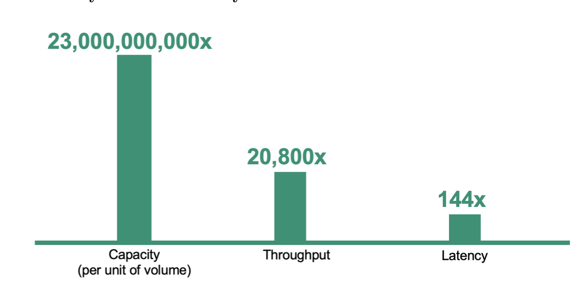
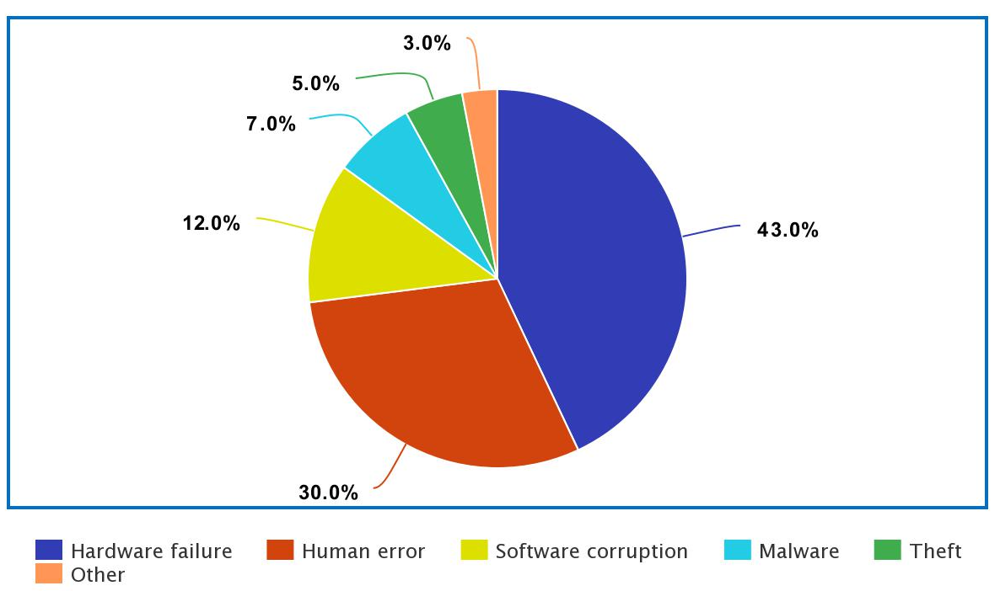

Maintainability
Kleppmann
Over time, many different people will work on the system
- engineering
- operations
- both maintaining current behavior and adapting the system to new use cases),
and they should all be able to work on it productively.
Lviv University
Definition
Big Data is a set of technologies designed to store, manage and analyze data that is:
Prefixes
Estimate
The total amount of data stored digitally worldwide is estimated to be getting close to 100 ZB as of 2021 (zettabytes)

Issue
Data volume has exponentially increased in recent decades.
Wait but why?
Types
Definion
Speed at which data is being generated, collected, and processed.
Attributes
Evolution since 1950s 
Features
Kleppmann’s definition
The system should continue to work correctly (performing the correct function at the desired level of performance) even in the face of adversity
Faults
Basically, theses are things that could go wrong.
Systems that can anticipate faults are called fault-tolerant or resilient.
Fault can be defined as one component of the system deviating from the spec.
Failures
Failures occur when system stops providing services to the user.
Faults might degenerate into failures.
Types of errors

Kleppmann
As the system grows (in data volume, traffic volume, or complexity), there should be reasonable ways of dealing with that growth.
In other words, scalability is a system’s ability to cope with increased load.
What is load?
Load is described by load parameters. These might include:
Performance
Increasing load affects performance. There are several meanings to this term:
How to deal with load
Elasticity
An approach to load handling whereby a system automatically adds resources in case of load increase, and can decrease resources if load decreases.
Common wisdom
Kleppmann
Over time, many different people will work on the system
and they should all be able to work on it productively.
Principles
Operability
Complexity symptoms
Types
Incidental
Easy things can be complex. There can be complex constructs that are succinctly described, familiar, available and easy to use. That is incidental complexity.
Rich Hickey talk “Simple made easy”: https://www.youtube.com/watch?v=SxdOUGdseq4
However: Complexity is often caused by
Accidental complexity
Moseley and Marks define complexity as accidental if it is not inherent in the problem that the software solves (as seen by the users) but arises only from the implementation.
How to remove?
By providing proper abstractions.
Definition (Ousterhout)
An abstraction is a simplified view of an entity, which omits unimportant details.
In modular programming, each module provides an abstraction in the form of its interface.
What can abstractions do?
Evolvability
One needs to adapt their big data system to possible future requirements changes.
However, keep in mind the following:
Types
Prescriptive
Diagnostic
Descriptive
Predictive
There are 2 main challenges associated with Big Data.
Challenges